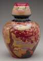

|  | Zsolnay Ceramic Factory Pécs, Hungary Vase About 1906 Porcelain with luster and other glazes Designed by Sándor Hidasy Pilló or Terez Mattyasovszky 12-3/4 inches high, 9-3/4 inches in diameter Gift of the Decorative Arts Council 94.36 |
Miklos Zsolnay founded a small ceramics workshop in 1851 in Pécs, in southern Hungary, that produced simple, useful wares to satisfy local demands. When his son Vilmos, a skilled designer and entrepreneur, took over in 1865, he added a new range of decorative vessels. This vase, created about 1906, generously displays the vivid luster glazes used in designs that won the factory international renown. Under Vilmos's leadership, the Zsolnay Ceramics Factory evolved into a modern industry that produced 80 percent of its wares for export.
Hungary remained an agrarian-based society well into the nineteenth century. The end of the century, however, saw an economic boom that brought with it advances in the arts, technology, and sciences. In 1896, the Millennial celebrations commemorated the arrival a thousand years earlier of the native peasantry, the Magyars. The Hapsburg ruling dynasty also used this occasion as an opportunity to provide spectacular displays of its absolute power and wealth. But NATIONALIST factions of the newly emerging country longed for release from the tyrannical Austro- Hungarian Empire and increasingly asserted social and political pressure to achieve autonomy.1
Notes
1. Gyöngyi Éri and Zsuzsa Jobbágyi, A Golden Age: Art and Society in Hungary, 1896-1914 (Miami: Center for the Fine Arts, 1990), pp. 9-16.

Key ideas.
Where does it come from?
What does it look like?
How was it used?
How was it made?
Discussion questions.
Additional resources.
Select another piece.